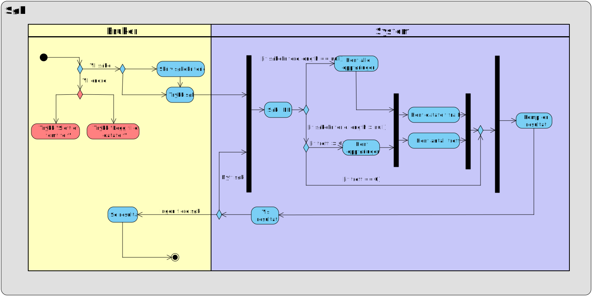

Innledning
Gruppeeksamen i objektorientert analyse og design ved Høgskolen i Buskerud og Vestfold vinteren 2015 gikk ut på å analysere et Java-program ved hjelp av diagrammodelleringsverktøy
Programmet er et forholdsvis enkelt program for å vise værdata. Programmet lar brukeren søke opp datafelt i en dokumentdatabase, endre innhold i disse, samt legge til og fjerne felt fra databasen. I tillegg bruker programmet en rekke UI-elementer for å holde brukeren orientert om tilstanden programmet befinner seg i. Vi har trukket ut aspekter av programmet som vi har vurdert som interessante å belyse i form av UML.
Navigering i dette dokumentet gjøres ved å scrolle nedover siden, eller ved å benytte snarveiene i menyen. Ved å klikke på diagrammene, vil disse åpne seg i full størrelse i nye faner.
Lav kohesjon
Utvikleren har ikke fulgt MVC-konvensjonene fullt ut, og har lagd en hybridløsning - noe som medfører lavere kohesjon i systemet enn det kunne hatt
Analyse av strukturen i programkoden avslører at utvikleren har hatt tanker om å skille datagrunnlag, grensesnitt og programlogikk, noe som er et godt utgangspunkt. Imidlertid er ikke tankerekken fullført, og det viser seg at datagrunnlaget - heretter kalt model - ligger i en pakke som også inneholder klasser for programlogikk. Model instansierer et azureclient-objekt som igjen tar seg av databaseaksess, og så danner datagrunnlaget for systemet.
Følgende klassediagram illustrerer problemet:

De nødvendige håndgrepene for å heve kohesjonsnivået er forholdsvis enkle: model bør skilles ut i en separat pakke fremfor å inkluderes i en pakke hvor det også befinner seg programlogikk. Disse logikklassene burde forøvrig også vært flyttet til controller-pakken. En strammere tilnærming til MVC-paradigmet ville således medført høyere kohesjonsnivå i programkoden (Holmstedt, 2004, s. 269).
Diskusjon rundt søkefunksjonalitet
Søkefunksjonen fungerer, men har innslag av dårlig usability
Før brukeren gjør et søk, er knappene for å slette- og legge til datafelt aktive, og reagerer visuelt på brukerinteraksjon. Dette kan skape forvirring da brukeren kan få inntrykk av at de faktisk utfører handlinger. Dette bryter med the principle of least astonishment, som vektlegger at grensesnittkontroller og programflyt bør oppføre seg slik brukere flest forventer (Seebach, 2001). Dette burde vært løst ved å markere knappene som inaktive inntil kriteriene for aktivering er oppfylt - fortrinnsvis når brukeren faktisk har utpekt kandidatfelt for addering eller sletting.
Problematikk ved endring av eksisterende data og struktur
Funksjonaliteten for å endre data og struktur i dokumentdatabasen følger ikke prinsipper for usability og fremstår som forvirrende for brukeren
Praktisk bruk av applikasjonen viser problemer i programflyten når det gjelder hvordan det håndterer bruker-input i tilfeller hvor brukeren ønsker å utføre endringer. Når bruker trykker "Lagre endringer", skjer det ingen ting. Debug-vinduet i IDE-et avslører imidlertid en programfeil, men brukeren av programmet får ingen tilbakemelding om dette, og programmet gjør heller ingen endringer i databasen. Igjen bryter programmet med the principle of least astonishment.
Sekvensdiagrammet under illustrerer problemet (det tas utgangspunkt i at bruker først har søkt opp kandidatdata for endring):

Grunnen til at det ikke er mulig for brukeren å endre data uten at visse uintuitive kriterier er oppfylt, er teknisk; koblingen mot databasen inntreffer ikke der det er hensiktsmessig i denne sammenheng.
Aktivitetsdiagrammet nedenfor illustrerer hvordan det forutsettes at brukeren trykker "Legg til et datafelt" før det blir mulig å gjøre noen endringer i databasen. Databasetilkobling som tillater endring utføres ikke før denne knappen trykkes, og brukeren får ingen tilbakemelding om dette, eller noen indikasjon på at endringer som er forsøkt gjort før denne knappen er trykket på ikke har blitt lagret. Aktivitetene merket med rødt kan dekomponeres ytterligere, men er i dette diagrammet kortet ned for leselighetens del.

Problematikk ved datasletting
Funksjonalitet for å slette data i dokumentdatabasen følger heller ikke prinsipper for usability, og fremstår som forvirrende for brukeren
Bruk av programmet viser igjen problemer i programflyten når det gjelder hvordan det håndterer bruker-input. Når brukeren trykker "Slett et tomt felt", får brukeren vist et nytt grensesnittvindu hvor alle tomme felt blir fremvist. Disse er representert med cellenavn fra databasen. Når brukeren så velger et datafelt og trykker "Slett det valgte feltet", skjer det ingenting. For brukeren fremstår det som om applikasjonen fryser.
Sekvensdiagrammet under illustrerer dette:
Igjen inntreffer ikke koblingen mot databasen der det er hensiktsmessig. Denne koblingen skjer først der livslinjene i sekvensdiagrammet er markert med grønt.
Databasen og fantomkolonner
Brukers interaksjon mot databasen skaper potensielt tomme kolonner
Brukeren har mulighet til å slette tomme felt, men ikke hele kolonner i databasen. Dette gjør at det blir "fantomkolonner" etter innholdet i feltene blir slettet.
Sletting av kolonner fordrer således, med nåværende implementasjon i applikasjonen, tredjepartsverktøy - eksempelvis Azure Storage Explorer.
Øvrige observasjoner
Vi har gjort noen observasjoner i programkode og -flyt som vi vurderer som interessante å påpeke
- Applikasjonen har en del ubrukte import-setninger. Disse gjør applikasjonen større enn nødvendig, og de bidrar til å gjøre koden mer uoversiktlig. Ubrukte importsetninger bør fjernes
- Variabelnavn er til tider lite beskrivende i koden, og bidrar til å svekke den generelle lesbarheten. Beskrivende variabelnavn bør tilstrebes (Martin, 2015, kap. 2)
Konklusjon
Ingress
Brødtekst.
Litteraturreferanser
- Holmstedt, V. (2004). Objektorientert systemutvikling og UML. Fagbokforlaget.
- Seebach, P. (2001). The principle of least astonishment. IBM DeveloperWorks.
- Martin, R. C. (2015). Clean code. Prentice Hall.
- Bootstrap-tema hentet fra www.bootswatch.com
- Bootswatch-lisens